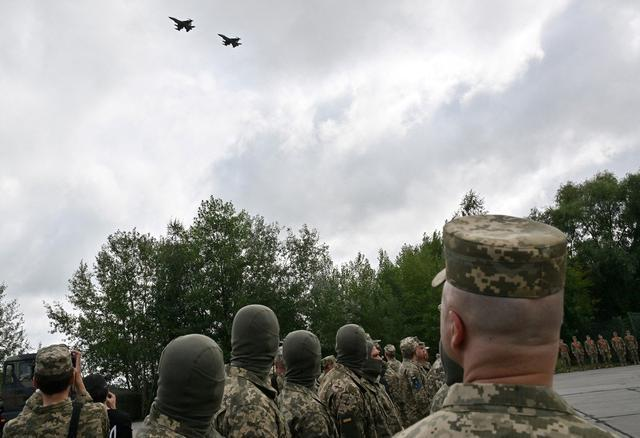
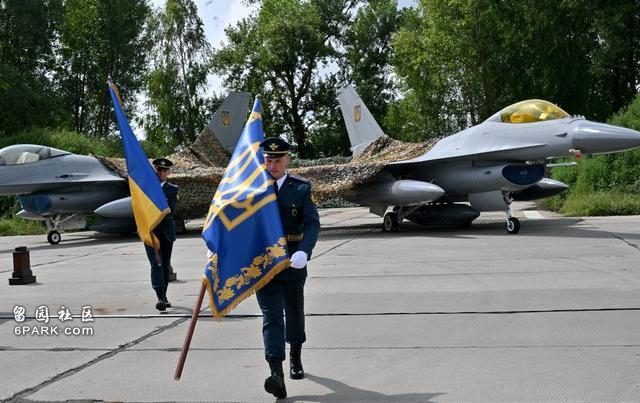
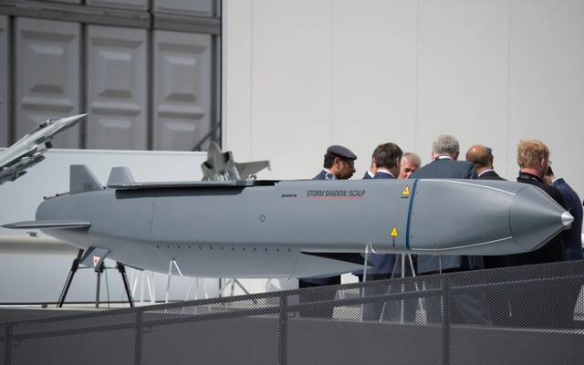
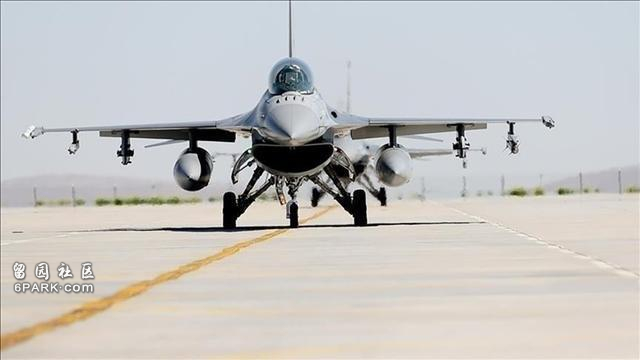
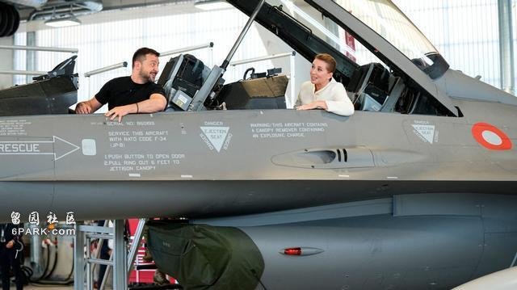

根据《环球网》的相关报道，乌克兰总统泽连斯基确认，西方援助的F-16战斗机已经投入使用。7月31号，已经有居民拍摄到了F-16从空中飞过的高清图片，只是这架F-16似乎还没来得及涂抹上乌克兰空军的识别标志，疑似是刚刚从北约国家转场而来。

▲乌克兰F-16战斗机，图片来源：网络
早在去年6月份，荷兰和挪威就在英国的牵头下，相继宣布愿意为乌克兰援助F-16。但是因为各种原因，交付工作推迟到了现在。这其中的主要问题不是技术，更是其他问题，如谁来驾驶战斗机。由于办事过于拖沓，F-16没有赶上去年的乌克兰夏季大反攻，这也让泽连斯基很是恼火。不过F-16交付很慢，和乌克兰飞行员自己不给力也大有关系。早在去年的8、9月份，乌克兰就挑选了32名极富经验的米格-29战斗机飞行员，前往美国的亚利桑那州图森莫里斯军事基地学习驾驶F-16的相关课程。在初期，他们只是经过了模拟器培训，但因为英语不过关，迟迟无法展开正式训练。对于这些乌克兰的飞行员来说，语言关是必须要过的。
而即使身处英语环境中，没个半年左右也很难彻底熟悉驾驶F-16战斗机所必须的英文。据称在整个培训过程中，也就只有不到10人具备成为合格F-16飞行员的潜力。所以虽然战斗机就放在那里，但无奈乌克兰飞行员就是没办法把它们开走。其实美国这边也很着急，帮乌克兰划定了最后期限，规定北约国家今年7月底左右必须将F-16交付到位。根据乌克兰《国际文传电讯社》的报道，目前乌方接收了10架，有望在年底之前再拿到10架，这个情况和乌克兰飞行员的培训状况基本相符。

▲乌克兰F-16战斗机，图片来源：网络
但是，这个数字相比于西方国家之前的承诺来说，其实已经少很多了。之前荷兰同意援助给乌克兰24架，丹麦则承诺提供19架，加上挪威等国家，未来乌克兰到手的F-16战斗机总数应该不会低于50架。该消息，也得到了美国《新闻周刊》的确认。这50架战斗机按照乌克兰编制，可以组成5到6个中队，在最理想的状态下，最多时可以有25到35架同时出动。不管是执行空战还是对地打击任务，对俄罗斯来说都相当有威胁。
荷兰作为乌克兰F-16的重要提供国之一，早在去年就已宣布，允许乌克兰使用F-16打击俄本土，算是解除了入乌F-16的“紧箍咒”。而俄罗斯这边也不示弱，立即宣布首杀F-16的俄飞行员可以获得17万美元，也就是大约122万左右人民币的高额奖金，一如当时“豹”2、M1、“海马斯”进入乌克兰之后的情况差不多。当然由于装备不同， F-16的奖金比之于这些地面装备来说也提高了一些。

▲“风暴阴影”导弹，图片来源：网络
F-16战斗机可以挂载北约提供的“风暴阴影”/“斯卡普”EG导弹，在较远的距离发起攻击。在F-16入场之前，乌克兰也是频频袭击俄军的防空导弹阵地。就在前几天，乌克兰的巡航导弹还打击了克里米亚半岛上的S-400防空导弹系统，导致4台导弹发射车严重受损。F-16入场，挂“风暴阴影”的情况下，将具有700公里的打击距离。
除非提前发现，地面防空导弹系统很难将其击落。要对付F-16，俄罗斯还有别的应对手段。第一，F-16总不能不落地吧，所以必须要找机场降落，这可以说是F-16的第一个命门。此前就有消息称，为了保护这些重要的资产，乌克兰花大力气和大资金，提前在利沃夫地区翻修了机场，构筑了地下机库和地面上的加固机库，甚至不惜调动为数不多的防空导弹强化机场防空，就是为了严防俄军的远程打击。

▲F-16战机，图片来源：网络
至于乌克兰中部和东部的大量机场，由于全部都能够被俄军的战术导弹覆盖，所以F-16很难立足。不过就算是躲在了利沃夫，甚至是西部更远的地方，俄军在有情报支持的情况下，照样能够发动远程打击。比如开战没几天的时候，利沃夫的西方雇佣兵营地就遭到了“伊斯坎德尔”导弹的重创。所以躲在哪都没用，只要F-16确认部署在乌克兰境内，理论上俄军都可以在地面上将其击毁。
那么是不是意味着F-16可以部署在波罗的海三国、罗马尼亚、波兰这样的周边国家，就能躲过俄罗斯袭击呢？恐怕不能。因为这么做，无异于北约国家直接参战。尽管这些国家在外交态度上对俄罗斯极度强硬，但是回归到现实层面，没有一个国家会愿意和俄罗斯起正面冲突，尤其是为了乌克兰这样的傀儡损害自己的利益，必然不值当。尽管从战术上来说，将飞机部署在海外作战时再飞入乌克兰境内，的确是无懈可击的做法，但在现实层面根本行不通。第二，乌克兰坚持要用自己的飞行员来驾驶F-16。

▲泽连斯基去年参观F-16战机，图片来源：网络
前文说过，这也是导致F-16只能少量交付的一个重要因素。既然如此，俄罗斯可以发挥自己情报系统价值，“开盒”这些乌克兰飞行员的个人信息。这些人都有去美国的经历，他们在哪里接受的培训、都和哪些人接触过、相信对专业的情报机构来说，想要调查清楚也不难。既然如此，就可以针对这些人搞暗杀。
从目前的情况来看，尽管存在北约现役飞行员或者退役飞行员“换皮”后，加入乌克兰空军的可能性。但此种方案风险极大，包括泽连斯基自己都不敢同意。乌克兰飞行员参加的是速成培训，课程都是经过大幅度修改简化的，要的就是一个快速、顺利毕业。所以尽管乌克兰的这些飞行员可能有实战经验，但对于F-16的认识还不够，还不能这么快就把它的价值发挥到最大的程度。从目前的战场整体态势上来看，乌克兰已经陷入到了极大的劣势中。
前不久还有消息传出，乌克兰从9月份开始，可能就发不起前线士兵的工资了，这和俄罗斯一再提高士兵的征召经费，提高作战的奖金额度相比，简直天差地别。更何况乌克兰接收到的只是F-16的早期版本（Block 50），整体作战实力仅相当于苏-27SM。所以靠F-16就想逆转整个战场态势，无异于痴人说梦。尽管F-16在某些人的嘴里，有一个相当霸气响亮的名字——“灭俄神器”。